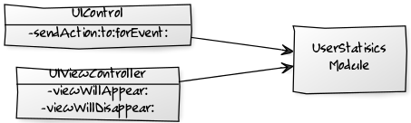
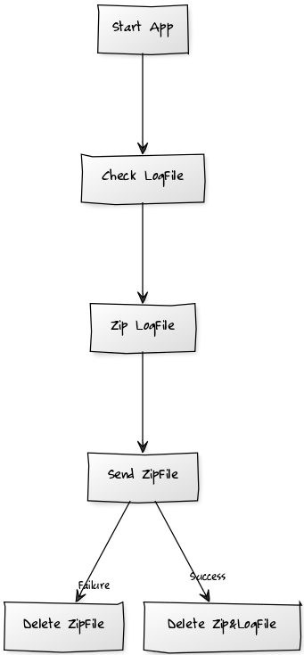
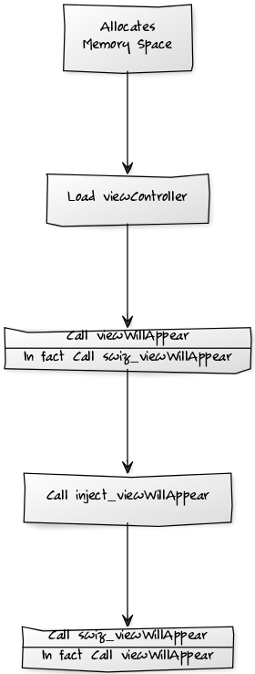

<!DOCTYPE html>
<html>
<head><meta name="generator" content="Hexo 3.9.0">
    <meta charset="utf-8">

    

    
    <title>[iOS]用户行为分析模块 | Gaussli&#39;s Blog</title>
    
    <meta name="viewport" content="width=device-width, initial-scale=1, maximum-scale=1">
    
        <meta name="keywords" content="UIControl,用户行为,无埋点,hook,swizzling,zip压缩,SSZipArchive,AFNetworking">
    
    <meta name="description" content="思路1.采集数据  利用Hook分别在UIViewController和UIControl中注入用户行为分析采集代码 把采集到的数据存储在Sandbox中  2.发送数据  启动App 检查是否有昨天及之前的用户行为分析日志文件，并删除存在的所有zip文件（保证日志文件夹的正确性，不会出现不必要的zip文件） 把昨天及之前的用户行为分析日志文件进行打包操作，形成zip文件 上传zip文件 上传成功">
<meta name="keywords" content="UIControl,用户行为,无埋点,hook,swizzling,zip压缩,SSZipArchive,AFNetworking">
<meta property="og:type" content="article">
<meta property="og:title" content="[iOS]用户行为分析模块">
<meta property="og:url" content="http://gaussli.com/2016/09/08/ios-用户行为分析模块/index.html">
<meta property="og:site_name" content="Gaussli&#39;s Blog">
<meta property="og:description" content="思路1.采集数据  利用Hook分别在UIViewController和UIControl中注入用户行为分析采集代码 把采集到的数据存储在Sandbox中  2.发送数据  启动App 检查是否有昨天及之前的用户行为分析日志文件，并删除存在的所有zip文件（保证日志文件夹的正确性，不会出现不必要的zip文件） 把昨天及之前的用户行为分析日志文件进行打包操作，形成zip文件 上传zip文件 上传成功">
<meta property="og:locale" content="en">
<meta property="og:image" content="http://gaussli.com/placeholder.png">
<meta property="og:updated_time" content="2020-03-25T20:24:45.253Z">
<meta name="twitter:card" content="summary">
<meta name="twitter:title" content="[iOS]用户行为分析模块">
<meta name="twitter:description" content="思路1.采集数据  利用Hook分别在UIViewController和UIControl中注入用户行为分析采集代码 把采集到的数据存储在Sandbox中  2.发送数据  启动App 检查是否有昨天及之前的用户行为分析日志文件，并删除存在的所有zip文件（保证日志文件夹的正确性，不会出现不必要的zip文件） 把昨天及之前的用户行为分析日志文件进行打包操作，形成zip文件 上传zip文件 上传成功">
<meta name="twitter:image" content="http://gaussli.com/placeholder.png">
    

    
        <link rel="alternate" href="/atom.xml" title="Gaussli&#39;s Blog" type="application/atom+xml">
    

    
        <link rel="icon" href="/favicon.png">
    

    <link rel="stylesheet" href="/libs/font-awesome/css/font-awesome.min.css">
    <link rel="stylesheet" href="/libs/titillium-web/styles.css">
    <link rel="stylesheet" href="/libs/source-code-pro/styles.css">

    <link rel="stylesheet" href="/css/style.css">

    <script src="/libs/jquery/3.3.1/jquery.min.js"></script>
    
    
        <link rel="stylesheet" href="/libs/lightgallery/css/lightgallery.min.css">
    
    
        <link rel="stylesheet" href="/libs/justified-gallery/justifiedGallery.min.css">
    
    
        <script type="text/javascript">
(function(i,s,o,g,r,a,m) {i['GoogleAnalyticsObject']=r;i[r]=i[r]||function() {
(i[r].q=i[r].q||[]).push(arguments)},i[r].l=1*new Date();a=s.createElement(o),
m=s.getElementsByTagName(o)[0];a.async=1;a.src=g;m.parentNode.insertBefore(a,m)
})(window,document,'script','//www.google-analytics.com/analytics.js','ga');

ga('create', 'UA-86183531-1', 'auto');
ga('send', 'pageview');

</script>
    
    


</head>
</html>
<body>
    <div id="wrap">
        <header id="header">
    <div id="header-outer" class="outer">
        <div class="container">
            <div class="container-inner">
                <div id="header-title">
                    <h1 class="logo-wrap">
                        <a href="/" class="logo"></a>
                    </h1>
                    
                        <h2 class="subtitle-wrap">
                            <p class="subtitle">Learn More Everyday</p>
                        </h2>
                    
                </div>
                <div id="header-inner" class="nav-container">
                    <a id="main-nav-toggle" class="nav-icon fa fa-bars"></a>
                    <div class="nav-container-inner">
                        <ul id="main-nav">
                            
                                <li class="main-nav-list-item" >
                                    <a class="main-nav-list-link" href="/">Home</a>
                                </li>
                            
                                        <ul class="main-nav-list"><li class="main-nav-list-item"><a class="main-nav-list-link" href="/categories/tech/">Tech</a><ul class="main-nav-list-child"><li class="main-nav-list-item"><a class="main-nav-list-link" href="/categories/tech/android/">Android</a></li><li class="main-nav-list-item"><a class="main-nav-list-link" href="/categories/tech/hexo/">Hexo</a></li><li class="main-nav-list-item"><a class="main-nav-list-link" href="/categories/tech/j2ee/">J2EE</a></li><li class="main-nav-list-item"><a class="main-nav-list-link" href="/categories/tech/linux/">Linux</a></li><li class="main-nav-list-item"><a class="main-nav-list-link" href="/categories/tech/mac/">Mac</a></li><li class="main-nav-list-item"><a class="main-nav-list-link" href="/categories/tech/maven/">Maven</a></li><li class="main-nav-list-item"><a class="main-nav-list-link" href="/categories/tech/mysql/">MySQL</a></li><li class="main-nav-list-item"><a class="main-nav-list-link" href="/categories/tech/network/">Network</a></li><li class="main-nav-list-item"><a class="main-nav-list-link" href="/categories/tech/springboot/">SpringBoot</a></li><li class="main-nav-list-item"><a class="main-nav-list-link" href="/categories/tech/virtualbox/">VirtualBox</a></li><li class="main-nav-list-item"><a class="main-nav-list-link" href="/categories/tech/ios/">iOS</a></li></ul></li><li class="main-nav-list-item"><a class="main-nav-list-link" href="/categories/travel/">Travel</a></li></ul>
                                    
                                <li class="main-nav-list-item" >
                                    <a class="main-nav-list-link" href="/about/index.html">About</a>
                                </li>
                            
                        </ul>
                        <nav id="sub-nav">
                            <div id="search-form-wrap">

    <form class="search-form">
        <input type="text" class="ins-search-input search-form-input" placeholder="Search" />
        <button type="submit" class="search-form-submit"></button>
    </form>
    <div class="ins-search">
    <div class="ins-search-mask"></div>
    <div class="ins-search-container">
        <div class="ins-input-wrapper">
            <input type="text" class="ins-search-input" placeholder="Type something..." />
            <span class="ins-close ins-selectable"><i class="fa fa-times-circle"></i></span>
        </div>
        <div class="ins-section-wrapper">
            <div class="ins-section-container"></div>
        </div>
    </div>
</div>
<script>
(function (window) {
    var INSIGHT_CONFIG = {
        TRANSLATION: {
            POSTS: 'Posts',
            PAGES: 'Pages',
            CATEGORIES: 'Categories',
            TAGS: 'Tags',
            UNTITLED: '(Untitled)',
        },
        ROOT_URL: '/',
        CONTENT_URL: '/content.json',
    };
    window.INSIGHT_CONFIG = INSIGHT_CONFIG;
})(window);
</script>
<script src="/js/insight.js"></script>

</div>
                        </nav>
                    </div>
                </div>
            </div>
        </div>
    </div>
</header>
        <div class="container">
            <div class="main-body container-inner">
                <div class="main-body-inner">
                    <section id="main">
                        <div class="main-body-header">
    <h1 class="header">
    
    <a class="page-title-link" href="/categories/tech/">Tech</a><i class="icon fa fa-angle-right"></i><a class="page-title-link" href="/categories/tech/ios/">iOS</a>
    </h1>
</div>
                        <div class="main-body-content">
                            <article id="post-ios-用户行为分析模块" class="article article-single article-type-post" itemscope itemprop="blogPost">
    <div class="article-inner">
        
            <header class="article-header">
                
    
        <h1 class="article-title" itemprop="name">
        [iOS]用户行为分析模块
        </h1>
    

            </header>
        
        
            <div class="article-meta">
                
    <div class="article-date">
        <a href="/2016/09/08/ios-用户行为分析模块/" class="article-date">
            <time datetime="2016-09-08T03:40:17.000Z" itemprop="datePublished">2016-09-08</time>
        </a>
    </div>

                
    <div class="article-tag">
        <i class="fa fa-tag"></i>
        <a class="tag-link" href="/tags/afnetworking/">AFNetworking</a>, <a class="tag-link" href="/tags/ssziparchive/">SSZipArchive</a>, <a class="tag-link" href="/tags/uicontrol/">UIControl</a>, <a class="tag-link" href="/tags/hook/">hook</a>, <a class="tag-link" href="/tags/swizzling/">swizzling</a>, <a class="tag-link" href="/tags/zip压缩/">zip压缩</a>, <a class="tag-link" href="/tags/无埋点/">无埋点</a>, <a class="tag-link" href="/tags/用户行为/">用户行为</a>
    </div>

            </div>
        
        
        <div class="article-entry" itemprop="articleBody">
            <h2 id="思路"><a href="#思路" class="headerlink" title="思路"></a>思路</h2><h3 id="1-采集数据"><a href="#1-采集数据" class="headerlink" title="1.采集数据"></a>1.采集数据</h3><p></p>
<ol>
<li>利用Hook分别在<code>UIViewController</code>和<code>UIControl</code>中注入用户行为分析采集代码</li>
<li>把采集到的数据存储在Sandbox中</li>
</ol>
<h3 id="2-发送数据"><a href="#2-发送数据" class="headerlink" title="2.发送数据"></a>2.发送数据</h3><p></p>
<ol>
<li>启动App</li>
<li>检查是否有昨天及之前的用户行为分析日志文件，并删除存在的所有zip文件（保证日志文件夹的正确性，不会出现不必要的zip文件）</li>
<li>把昨天及之前的用户行为分析日志文件进行打包操作，形成zip文件</li>
<li>上传zip文件</li>
<li>上传成功则删除zip文件和昨天及之前的用户行为分析日志文件，上传失败则只删除zip文件。这样可以保证每次每个日志文件只能成功上传一次，且及时删除文件保持App所占内存空间不会因为日志文件而逐渐变大。</li>
</ol>
<h2 id="实现"><a href="#实现" class="headerlink" title="实现"></a>实现</h2><h3 id="1-Hook通过置换函数的方式来实现代码的注入"><a href="#1-Hook通过置换函数的方式来实现代码的注入" class="headerlink" title="1.Hook通过置换函数的方式来实现代码的注入"></a>1.Hook通过置换函数的方式来实现代码的注入</h3><figure class="highlight objectivec"><table><tr><td class="gutter"><pre><span class="line">1</span><br><span class="line">2</span><br><span class="line">3</span><br><span class="line">4</span><br><span class="line">5</span><br><span class="line">6</span><br><span class="line">7</span><br><span class="line">8</span><br><span class="line">9</span><br><span class="line">10</span><br><span class="line">11</span><br><span class="line">12</span><br><span class="line">13</span><br><span class="line">14</span><br><span class="line">15</span><br><span class="line">16</span><br></pre></td><td class="code"><pre><span class="line"><span class="comment">// Class KitHookUtil.m</span></span><br><span class="line"></span><br><span class="line"><span class="meta">#<span class="meta-keyword">pragma</span> mark - 调换函数实现</span></span><br><span class="line">+ (<span class="keyword">void</span>) swizzlingInClass: (Class)cls originalSelector: (SEL)originalSelector swizzledSelector: (SEL)swizzledSelector &#123;</span><br><span class="line">    Class <span class="keyword">class</span> = cls;</span><br><span class="line">    Method originalMethod = class_getInstanceMethod(<span class="keyword">class</span>, originalSelector);</span><br><span class="line">    Method swizzledMethod = class_getInstanceMethod(<span class="keyword">class</span>, swizzledSelector);</span><br><span class="line">    </span><br><span class="line">    <span class="built_in">BOOL</span> didAddMethod = class_addMethod(<span class="keyword">class</span>, originalSelector, method_getImplementation(swizzledMethod), method_getTypeEncoding(swizzledMethod));</span><br><span class="line">    <span class="keyword">if</span> (didAddMethod) &#123;</span><br><span class="line">        class_replaceMethod(<span class="keyword">class</span>, swizzledSelector, method_getImplementation(originalMethod), method_getTypeEncoding(originalMethod));</span><br><span class="line">    &#125;</span><br><span class="line">    <span class="keyword">else</span> &#123;</span><br><span class="line">        method_exchangeImplementations(originalMethod, swizzledMethod);</span><br><span class="line">    &#125;</span><br><span class="line">&#125;</span><br></pre></td></tr></table></figure>
<h3 id="2-创建一个UIViewController的Category，在其中进行-viewWillAppear-和-viewWillDisappear-函数的置换"><a href="#2-创建一个UIViewController的Category，在其中进行-viewWillAppear-和-viewWillDisappear-函数的置换" class="headerlink" title="2.创建一个UIViewController的Category，在其中进行-viewWillAppear:和-viewWillDisappear:函数的置换"></a>2.创建一个<code>UIViewController</code>的Category，在其中进行<code>-viewWillAppear:</code>和<code>-viewWillDisappear:</code>函数的置换</h3><p><code>-load</code>函数是NSObject的函数，在其中执行函数置换，能在对象初始化的初期就执行置换操作。</p>
<p><code>-swiz_viewWillAppear:</code>函数最后调用自身，这样看似会做成一个死循环，但实质并不是。由于函数已经被置换了，所以这句调用自身的语句实质上是调用原本的<code>-viewWillAppear:</code>，这样保证注入代码后，程序还能正常地继续执行下去。同理以下的<code>-swiz_viewWillDisappear:</code>也是这个道理。调用流程如下：</p>
<p></p>
<figure class="highlight objectivec"><table><tr><td class="gutter"><pre><span class="line">1</span><br><span class="line">2</span><br><span class="line">3</span><br><span class="line">4</span><br><span class="line">5</span><br><span class="line">6</span><br><span class="line">7</span><br><span class="line">8</span><br><span class="line">9</span><br><span class="line">10</span><br><span class="line">11</span><br><span class="line">12</span><br><span class="line">13</span><br><span class="line">14</span><br><span class="line">15</span><br><span class="line">16</span><br><span class="line">17</span><br><span class="line">18</span><br><span class="line">19</span><br><span class="line">20</span><br><span class="line">21</span><br><span class="line">22</span><br><span class="line">23</span><br><span class="line">24</span><br><span class="line">25</span><br><span class="line">26</span><br><span class="line">27</span><br></pre></td><td class="code"><pre><span class="line"><span class="comment">// Class UIViewController+KitUserStatisics.m</span></span><br><span class="line"></span><br><span class="line"><span class="meta">#<span class="meta-keyword">pragma</span> mark - load</span></span><br><span class="line">+ (<span class="keyword">void</span>)load &#123;</span><br><span class="line">    <span class="keyword">static</span> <span class="built_in">dispatch_once_t</span> onceToken;</span><br><span class="line">    <span class="built_in">dispatch_once</span>(&amp;onceToken, ^&#123;</span><br><span class="line">        <span class="comment">// 调换函数实现</span></span><br><span class="line">        [KitHookUtil swizzlingInClass:[<span class="keyword">self</span> <span class="keyword">class</span>] originalSelector:<span class="keyword">@selector</span>(viewWillAppear:) swizzledSelector:<span class="keyword">@selector</span>(swiz_viewWillAppear:)];</span><br><span class="line">        [KitHookUtil swizzlingInClass:[<span class="keyword">self</span> <span class="keyword">class</span>] originalSelector:<span class="keyword">@selector</span>(viewWillDisappear:) swizzledSelector:<span class="keyword">@selector</span>(swiz_viewWillDisappear:)];</span><br><span class="line">    &#125;);</span><br><span class="line">&#125;</span><br><span class="line"></span><br><span class="line"><span class="meta">#<span class="meta-keyword">pragma</span> mark - 置换viewWillAppear</span></span><br><span class="line">- (<span class="keyword">void</span>)swiz_viewWillAppear:(<span class="built_in">BOOL</span>)animated &#123;</span><br><span class="line">  <span class="comment">// 代码注入</span></span><br><span class="line">    [<span class="keyword">self</span> inject_viewWillAppear];</span><br><span class="line">    <span class="comment">// 调回原本的函数</span></span><br><span class="line">    [<span class="keyword">self</span> swiz_viewWillAppear:animated];</span><br><span class="line">&#125;</span><br><span class="line"></span><br><span class="line"><span class="meta">#<span class="meta-keyword">pragma</span> mark - 置换viewWillDisappear</span></span><br><span class="line">- (<span class="keyword">void</span>)swiz_viewWillDisappear:(<span class="built_in">BOOL</span>)animated &#123;</span><br><span class="line">  <span class="comment">// 代码注入</span></span><br><span class="line">    [<span class="keyword">self</span> inject_viewWillDisAppear];</span><br><span class="line">    <span class="comment">// 调回原本的函数</span></span><br><span class="line">    [<span class="keyword">self</span> swiz_viewWillDisappear:animated];</span><br><span class="line">&#125;</span><br></pre></td></tr></table></figure>
<h3 id="3-UIViewController注入代码实现"><a href="#3-UIViewController注入代码实现" class="headerlink" title="3.UIViewController注入代码实现"></a>3.UIViewController注入代码实现</h3><p>很简单，就是保存行为数据，形式为<code>TypeCode,TimeInterval,ClassName,Remark</code>，就是<code>行为类型,时间戳,触发类名,备注</code>，写入到Sandbox中，路径为<code>&lt;App Sandbox&gt;/Documents/userStatisics/xxx.log</code>，用户行为分析日志文件命名规则为<code>&lt;yyyy-MM-dd&gt;_userStatisics_&lt;Device UUID&gt;.log</code></p>
<figure class="highlight objectivec"><table><tr><td class="gutter"><pre><span class="line">1</span><br><span class="line">2</span><br><span class="line">3</span><br><span class="line">4</span><br><span class="line">5</span><br><span class="line">6</span><br><span class="line">7</span><br><span class="line">8</span><br><span class="line">9</span><br><span class="line">10</span><br><span class="line">11</span><br><span class="line">12</span><br><span class="line">13</span><br><span class="line">14</span><br><span class="line">15</span><br><span class="line">16</span><br><span class="line">17</span><br><span class="line">18</span><br><span class="line">19</span><br><span class="line">20</span><br><span class="line">21</span><br><span class="line">22</span><br><span class="line">23</span><br><span class="line">24</span><br><span class="line">25</span><br><span class="line">26</span><br></pre></td><td class="code"><pre><span class="line"><span class="comment">// Class UIViewController+KitUserStatisics.m</span></span><br><span class="line"></span><br><span class="line"><span class="meta">#<span class="meta-keyword">pragma</span> mark - 注入用户分析代码</span></span><br><span class="line"><span class="meta">#<span class="meta-keyword">pragma</span> mark 注入viewWillAppear</span></span><br><span class="line">- (<span class="keyword">void</span>) inject_viewWillAppear &#123;</span><br><span class="line">    <span class="comment">// 保存用户分析信息</span></span><br><span class="line">    <span class="comment">// 用户分析信息(类型,时间,内容,备注)</span></span><br><span class="line">    <span class="built_in">NSString</span> *contentString = [<span class="built_in">NSString</span> stringWithFormat:<span class="string">@"%@,%@,%@,%@"</span>,</span><br><span class="line">                               <span class="string">@"1"</span>,</span><br><span class="line">                               [KitUserStatisicsUtil sharedInstance].currentTimeInterval,</span><br><span class="line">                               <span class="built_in">NSStringFromClass</span>([<span class="keyword">self</span> <span class="keyword">class</span>]),</span><br><span class="line">                               <span class="string">@"进入ViewController"</span>];</span><br><span class="line">    [[KitUserStatisicsUtil sharedInstance] writeUserStatisicsFileString:contentString];</span><br><span class="line">&#125;</span><br><span class="line"></span><br><span class="line"><span class="meta">#<span class="meta-keyword">pragma</span> mark 注入viewWillDisappear</span></span><br><span class="line">- (<span class="keyword">void</span>) inject_viewWillDisAppear &#123;</span><br><span class="line">    <span class="comment">// 保存用户分析信息</span></span><br><span class="line">    <span class="comment">// 用户分析信息(类型,时间,内容,备注)</span></span><br><span class="line">    <span class="built_in">NSString</span> *contentString = [<span class="built_in">NSString</span> stringWithFormat:<span class="string">@"%@,%@,%@,%@"</span>,</span><br><span class="line">                               <span class="string">@"2"</span>,</span><br><span class="line">                               [KitUserStatisicsUtil sharedInstance].currentTimeInterval,</span><br><span class="line">                               <span class="built_in">NSStringFromClass</span>([<span class="keyword">self</span> <span class="keyword">class</span>]),</span><br><span class="line">                               <span class="string">@"离开ViewController"</span>];</span><br><span class="line">    [[KitUserStatisicsUtil sharedInstance] writeUserStatisicsFileString:contentString];</span><br><span class="line">&#125;</span><br></pre></td></tr></table></figure>
<h3 id="4-创建一个UIControl的Category，在其中进行-sendAction-to-forEvent-函数的置换"><a href="#4-创建一个UIControl的Category，在其中进行-sendAction-to-forEvent-函数的置换" class="headerlink" title="4.创建一个UIControl的Category，在其中进行-sendAction:to:forEvent:函数的置换"></a>4.创建一个<code>UIControl</code>的Category，在其中进行<code>-sendAction:to:forEvent:</code>函数的置换</h3><p>原理如上述第2点。</p>
<figure class="highlight objectivec"><table><tr><td class="gutter"><pre><span class="line">1</span><br><span class="line">2</span><br><span class="line">3</span><br><span class="line">4</span><br><span class="line">5</span><br><span class="line">6</span><br><span class="line">7</span><br><span class="line">8</span><br><span class="line">9</span><br><span class="line">10</span><br><span class="line">11</span><br><span class="line">12</span><br><span class="line">13</span><br><span class="line">14</span><br><span class="line">15</span><br><span class="line">16</span><br><span class="line">17</span><br><span class="line">18</span><br></pre></td><td class="code"><pre><span class="line"><span class="comment">// Class UIControl+KitUserStatisics.m</span></span><br><span class="line"></span><br><span class="line"><span class="meta">#<span class="meta-keyword">pragma</span> mark - load</span></span><br><span class="line">+ (<span class="keyword">void</span>)load &#123;</span><br><span class="line">    <span class="keyword">static</span> <span class="built_in">dispatch_once_t</span> onceToken;</span><br><span class="line">    <span class="built_in">dispatch_once</span>(&amp;onceToken, ^&#123;</span><br><span class="line">        <span class="comment">// 调换函数实现</span></span><br><span class="line">        [KitHookUtil swizzlingInClass:[<span class="keyword">self</span> <span class="keyword">class</span>] originalSelector:<span class="keyword">@selector</span>(sendAction:to:forEvent:) swizzledSelector:<span class="keyword">@selector</span>(swiz_sendAction:to:forEvent:)];</span><br><span class="line">    &#125;);</span><br><span class="line">&#125;</span><br><span class="line"></span><br><span class="line"><span class="meta">#<span class="meta-keyword">pragma</span> mark - 置换sendAction:to:forEvent:</span></span><br><span class="line">- (<span class="keyword">void</span>) swiz_sendAction:(SEL)action to:(<span class="keyword">id</span>)target forEvent:(<span class="built_in">UIEvent</span> *)event &#123;</span><br><span class="line">    <span class="comment">// 代码注入</span></span><br><span class="line">    [<span class="keyword">self</span> inject_sendAction:action to:target forEvent:event];</span><br><span class="line">    <span class="comment">// 调回原本的函数</span></span><br><span class="line">    [<span class="keyword">self</span> swiz_sendAction:action to:target forEvent:event];</span><br><span class="line">&#125;</span><br></pre></td></tr></table></figure>
<h3 id="5-UIControl注入代码实现"><a href="#5-UIControl注入代码实现" class="headerlink" title="5.UIControl注入代码实现"></a>5.UIControl注入代码实现</h3><p>和第3点一样，数据形式也很简单，保存行为数据，形式为<code>TypeCode,TimeInterval,BehaviorData,Remark</code>，就是<code>行为类型,时间戳,行为数据,备注</code>。</p>
<p>其中<code>BehaviorData(行为数据)</code>包括<code>UIControlClassName|TargetClassName|ActionFunctionName|UIControlTag|UIControlFrame|UIControlInfo</code>，即<code>控件类名|Target对应的类名|Action函数名|控件Tag值|控件Frame值|控件属性</code>。</p>
<p>其中<code>UIControlInfo(控件属性)</code>会由不同控件而不同。在iOS中继承<code>UIControl</code>的有以下控件：</p>
<ul>
<li>UIButton</li>
<li>UISegmentedControl</li>
<li>UITextField</li>
<li>UISlider</li>
<li>UISwitch</li>
<li>UIPageControl</li>
<li>UIStepper</li>
<li>UIDatePicker</li>
</ul>
<p>由于需要控件调用了<code>-addTarget:action:forControlEvents:</code>才能捕捉到行为数据，所以这里只做其中<code>UIButton</code>、<code>UISegmentedControl</code>、<code>UISlider</code>、<code>UISwitch</code>、<code>UIStepper</code>5种控件的行为分析，因为这5种控件通常都会调用<code>-addTarget:action:forControlEvents:</code>，其它UIControl控件就要视是否调用<code>-addTarget:action:forControlEvents:</code>函数了。</p>
<p>而这5种控件的<code>控件属性</code>会有所不同</p>
<ul>
<li>UIButton        ：保存titleLabel.text</li>
<li>UISegmentedControl  ：保存选中的文本或Index值</li>
<li>UISlider        ：保存滑动的值</li>
<li>UISwitch        ：保存“isOn”或者“isOff”状态</li>
<li>UIStepper       ：保存Stepper.value</li>
</ul>
<figure class="highlight objectivec"><table><tr><td class="gutter"><pre><span class="line">1</span><br><span class="line">2</span><br><span class="line">3</span><br><span class="line">4</span><br><span class="line">5</span><br><span class="line">6</span><br><span class="line">7</span><br><span class="line">8</span><br><span class="line">9</span><br><span class="line">10</span><br><span class="line">11</span><br><span class="line">12</span><br><span class="line">13</span><br><span class="line">14</span><br><span class="line">15</span><br><span class="line">16</span><br><span class="line">17</span><br><span class="line">18</span><br><span class="line">19</span><br><span class="line">20</span><br><span class="line">21</span><br><span class="line">22</span><br><span class="line">23</span><br><span class="line">24</span><br><span class="line">25</span><br><span class="line">26</span><br><span class="line">27</span><br><span class="line">28</span><br><span class="line">29</span><br><span class="line">30</span><br><span class="line">31</span><br><span class="line">32</span><br><span class="line">33</span><br><span class="line">34</span><br><span class="line">35</span><br><span class="line">36</span><br><span class="line">37</span><br><span class="line">38</span><br><span class="line">39</span><br><span class="line">40</span><br><span class="line">41</span><br><span class="line">42</span><br><span class="line">43</span><br><span class="line">44</span><br><span class="line">45</span><br><span class="line">46</span><br><span class="line">47</span><br><span class="line">48</span><br><span class="line">49</span><br><span class="line">50</span><br><span class="line">51</span><br><span class="line">52</span><br><span class="line">53</span><br><span class="line">54</span><br><span class="line">55</span><br><span class="line">56</span><br><span class="line">57</span><br><span class="line">58</span><br><span class="line">59</span><br><span class="line">60</span><br><span class="line">61</span><br><span class="line">62</span><br><span class="line">63</span><br><span class="line">64</span><br><span class="line">65</span><br><span class="line">66</span><br><span class="line">67</span><br><span class="line">68</span><br><span class="line">69</span><br><span class="line">70</span><br><span class="line">71</span><br><span class="line">72</span><br><span class="line">73</span><br><span class="line">74</span><br><span class="line">75</span><br><span class="line">76</span><br><span class="line">77</span><br><span class="line">78</span><br><span class="line">79</span><br><span class="line">80</span><br><span class="line">81</span><br><span class="line">82</span><br><span class="line">83</span><br><span class="line">84</span><br><span class="line">85</span><br><span class="line">86</span><br><span class="line">87</span><br><span class="line">88</span><br><span class="line">89</span><br><span class="line">90</span><br><span class="line">91</span><br><span class="line">92</span><br><span class="line">93</span><br><span class="line">94</span><br><span class="line">95</span><br><span class="line">96</span><br><span class="line">97</span><br><span class="line">98</span><br><span class="line">99</span><br><span class="line">100</span><br><span class="line">101</span><br><span class="line">102</span><br><span class="line">103</span><br><span class="line">104</span><br><span class="line">105</span><br><span class="line">106</span><br><span class="line">107</span><br><span class="line">108</span><br><span class="line">109</span><br></pre></td><td class="code"><pre><span class="line"><span class="comment">// Class UIControl+KitUserStatisics.m</span></span><br><span class="line"></span><br><span class="line"><span class="meta">#<span class="meta-keyword">pragma</span> mark - 注入用户分析代码</span></span><br><span class="line"><span class="meta">#<span class="meta-keyword">pragma</span> mark 注入sendAction中</span></span><br><span class="line">- (<span class="keyword">void</span>) inject_sendAction:(SEL)action to:(<span class="keyword">id</span>)target forEvent:(<span class="built_in">UIEvent</span> *)event &#123;</span><br><span class="line">    <span class="comment">// 保存用户分析信息</span></span><br><span class="line">    <span class="keyword">if</span> ([<span class="keyword">self</span> isKindOfClass:[<span class="built_in">UIButton</span> <span class="keyword">class</span>]]) &#123;</span><br><span class="line">        <span class="comment">// UIButton</span></span><br><span class="line">        <span class="comment">// 用户分析信息(类型,时间,内容,备注)</span></span><br><span class="line">        <span class="built_in">NSString</span> *contentString = [<span class="built_in">NSString</span> stringWithFormat:<span class="string">@"%@,%@,%@,%@"</span>,</span><br><span class="line">                                   <span class="string">@"100"</span>,</span><br><span class="line">                                   [KitUserStatisicsUtil sharedInstance].currentTimeInterval,</span><br><span class="line">                                   [<span class="built_in">NSString</span> stringWithFormat:<span class="string">@"%@|%@|%@|%ld|%@|%@"</span>,</span><br><span class="line">                                    <span class="built_in">NSStringFromClass</span>([<span class="keyword">self</span> <span class="keyword">class</span>]),</span><br><span class="line">                                    <span class="built_in">NSStringFromClass</span>([target <span class="keyword">class</span>]),</span><br><span class="line">                                    <span class="built_in">NSStringFromSelector</span>(action),</span><br><span class="line">                                    (<span class="keyword">long</span>)<span class="keyword">self</span>.tag,</span><br><span class="line">                                    <span class="built_in">NSStringFromCGRect</span>(<span class="keyword">self</span>.frame),</span><br><span class="line">                                    ((<span class="built_in">UIButton</span>*)<span class="keyword">self</span>).titleLabel.text ? ((<span class="built_in">UIButton</span>*)<span class="keyword">self</span>).titleLabel.text: <span class="string">@""</span>],</span><br><span class="line">                                   <span class="string">@"UIButton点击事件"</span>];</span><br><span class="line">        [[KitUserStatisicsUtil sharedInstance] writeUserStatisicsFileString:contentString];</span><br><span class="line">    &#125;</span><br><span class="line">    <span class="keyword">else</span> <span class="keyword">if</span> ([<span class="keyword">self</span> isKindOfClass:[<span class="built_in">UISegmentedControl</span> <span class="keyword">class</span>]]) &#123;</span><br><span class="line">        <span class="comment">// UISegmentedControl</span></span><br><span class="line">        <span class="comment">// 获取选中的标题，没有标题获取index值</span></span><br><span class="line">        <span class="built_in">UISegmentedControl</span> *tempSc = (<span class="built_in">UISegmentedControl</span>*)<span class="keyword">self</span>;</span><br><span class="line">        <span class="built_in">NSInteger</span> selectedSegmentIndex = tempSc.selectedSegmentIndex;</span><br><span class="line">        <span class="built_in">NSString</span> *selectedSegmentTitle = [tempSc titleForSegmentAtIndex:selectedSegmentIndex];</span><br><span class="line">        selectedSegmentTitle = selectedSegmentTitle == <span class="literal">nil</span> || selectedSegmentTitle.length == <span class="number">0</span> ? [<span class="built_in">NSString</span> stringWithFormat:<span class="string">@"%ld"</span>, selectedSegmentIndex] : selectedSegmentTitle;</span><br><span class="line">        <span class="comment">// 用户分析信息(类型,时间,内容,备注)</span></span><br><span class="line">        <span class="built_in">NSString</span> *contentString = [<span class="built_in">NSString</span> stringWithFormat:<span class="string">@"%@,%@,%@,%@"</span>,</span><br><span class="line">                                   <span class="string">@"101"</span>,</span><br><span class="line">                                   [KitUserStatisicsUtil sharedInstance].currentTimeInterval,</span><br><span class="line">                                   [<span class="built_in">NSString</span> stringWithFormat:<span class="string">@"%@|%@|%@|%ld|%@|%@"</span>,</span><br><span class="line">                                    <span class="built_in">NSStringFromClass</span>([<span class="keyword">self</span> <span class="keyword">class</span>]),</span><br><span class="line">                                    <span class="built_in">NSStringFromClass</span>([target <span class="keyword">class</span>]),</span><br><span class="line">                                    <span class="built_in">NSStringFromSelector</span>(action),</span><br><span class="line">                                    (<span class="keyword">long</span>)<span class="keyword">self</span>.tag,</span><br><span class="line">                                    <span class="built_in">NSStringFromCGRect</span>(<span class="keyword">self</span>.frame),</span><br><span class="line">                                    selectedSegmentTitle ? selectedSegmentTitle : <span class="string">@""</span>],</span><br><span class="line">                                   <span class="string">@"UISegmentedControl选择事件"</span>];</span><br><span class="line">        [[KitUserStatisicsUtil sharedInstance] writeUserStatisicsFileString:contentString];</span><br><span class="line">    &#125;</span><br><span class="line">    <span class="keyword">else</span> <span class="keyword">if</span> ([<span class="keyword">self</span> isKindOfClass:[<span class="built_in">UISlider</span> <span class="keyword">class</span>]]) &#123;</span><br><span class="line">        <span class="comment">// UISlider</span></span><br><span class="line">        <span class="comment">// 用户分析信息(类型,时间,内容,备注)</span></span><br><span class="line">        <span class="built_in">NSString</span> *contentString = [<span class="built_in">NSString</span> stringWithFormat:<span class="string">@"%@,%@,%@,%@"</span>,</span><br><span class="line">                                   <span class="string">@"102"</span>,</span><br><span class="line">                                   [KitUserStatisicsUtil sharedInstance].currentTimeInterval,</span><br><span class="line">                                   [<span class="built_in">NSString</span> stringWithFormat:<span class="string">@"%@|%@|%@|%ld|%@|%f"</span>,</span><br><span class="line">                                    <span class="built_in">NSStringFromClass</span>([<span class="keyword">self</span> <span class="keyword">class</span>]),</span><br><span class="line">                                    <span class="built_in">NSStringFromClass</span>([target <span class="keyword">class</span>]),</span><br><span class="line">                                    <span class="built_in">NSStringFromSelector</span>(action),</span><br><span class="line">                                    (<span class="keyword">long</span>)<span class="keyword">self</span>.tag,</span><br><span class="line">                                    <span class="built_in">NSStringFromCGRect</span>(<span class="keyword">self</span>.frame),</span><br><span class="line">                                    ((<span class="built_in">UISlider</span>*)<span class="keyword">self</span>).value],</span><br><span class="line">                                   <span class="string">@"UISlider选择事件"</span>];</span><br><span class="line">        [[KitUserStatisicsUtil sharedInstance] writeUserStatisicsFileString:contentString];</span><br><span class="line">        </span><br><span class="line">    &#125;</span><br><span class="line">    <span class="keyword">else</span> <span class="keyword">if</span> ([<span class="keyword">self</span> isKindOfClass:[<span class="built_in">UISwitch</span> <span class="keyword">class</span>]]) &#123;</span><br><span class="line">        <span class="comment">// UISwitch</span></span><br><span class="line">        <span class="comment">// 用户分析信息(类型,时间,内容,备注)</span></span><br><span class="line">        <span class="built_in">NSString</span> *contentString = [<span class="built_in">NSString</span> stringWithFormat:<span class="string">@"%@,%@,%@,%@"</span>,</span><br><span class="line">                                   <span class="string">@"103"</span>,</span><br><span class="line">                                   [KitUserStatisicsUtil sharedInstance].currentTimeInterval,</span><br><span class="line">                                   [<span class="built_in">NSString</span> stringWithFormat:<span class="string">@"%@|%@|%@|%ld|%@|%@"</span>,</span><br><span class="line">                                    <span class="built_in">NSStringFromClass</span>([<span class="keyword">self</span> <span class="keyword">class</span>]),</span><br><span class="line">                                    <span class="built_in">NSStringFromClass</span>([target <span class="keyword">class</span>]),</span><br><span class="line">                                    <span class="built_in">NSStringFromSelector</span>(action),</span><br><span class="line">                                    (<span class="keyword">long</span>)<span class="keyword">self</span>.tag,</span><br><span class="line">                                    <span class="built_in">NSStringFromCGRect</span>(<span class="keyword">self</span>.frame),</span><br><span class="line">                                    ((<span class="built_in">UISwitch</span>*)<span class="keyword">self</span>).isOn ? <span class="string">@"isOn"</span> : <span class="string">@"isOff"</span>],</span><br><span class="line">                                   <span class="string">@"UISwitch选择事件"</span>];</span><br><span class="line">        [[KitUserStatisicsUtil sharedInstance] writeUserStatisicsFileString:contentString];</span><br><span class="line">    &#125;</span><br><span class="line">    <span class="keyword">else</span> <span class="keyword">if</span> ([<span class="keyword">self</span> isKindOfClass:[<span class="built_in">UIStepper</span> <span class="keyword">class</span>]]) &#123;</span><br><span class="line">        <span class="comment">// UIStepper</span></span><br><span class="line">        <span class="comment">// 用户分析信息(类型,时间,内容,备注)</span></span><br><span class="line">        <span class="built_in">NSString</span> *contentString = [<span class="built_in">NSString</span> stringWithFormat:<span class="string">@"%@,%@,%@,%@"</span>,</span><br><span class="line">                                   <span class="string">@"104"</span>,</span><br><span class="line">                                   [KitUserStatisicsUtil sharedInstance].currentTimeInterval,</span><br><span class="line">                                   [<span class="built_in">NSString</span> stringWithFormat:<span class="string">@"%@|%@|%@|%ld|%@|%f"</span>,</span><br><span class="line">                                    <span class="built_in">NSStringFromClass</span>([<span class="keyword">self</span> <span class="keyword">class</span>]),</span><br><span class="line">                                    <span class="built_in">NSStringFromClass</span>([target <span class="keyword">class</span>]),</span><br><span class="line">                                    <span class="built_in">NSStringFromSelector</span>(action),</span><br><span class="line">                                    (<span class="keyword">long</span>)<span class="keyword">self</span>.tag,</span><br><span class="line">                                    <span class="built_in">NSStringFromCGRect</span>(<span class="keyword">self</span>.frame),</span><br><span class="line">                                    ((<span class="built_in">UIStepper</span>*)<span class="keyword">self</span>).value],</span><br><span class="line">                                   <span class="string">@"UIStepper选择事件"</span>];</span><br><span class="line">        [[KitUserStatisicsUtil sharedInstance] writeUserStatisicsFileString:contentString];</span><br><span class="line">    &#125;</span><br><span class="line">    <span class="keyword">else</span> &#123;</span><br><span class="line">        <span class="comment">// 其它</span></span><br><span class="line">        <span class="comment">// 用户分析信息(类型,时间,内容,备注)</span></span><br><span class="line">        <span class="built_in">NSString</span> *contentString = [<span class="built_in">NSString</span> stringWithFormat:<span class="string">@"%@,%@,%@,%@"</span>,</span><br><span class="line">                                   <span class="string">@"105"</span>,</span><br><span class="line">                                   [KitUserStatisicsUtil sharedInstance].currentTimeInterval,</span><br><span class="line">                                   [<span class="built_in">NSString</span> stringWithFormat:<span class="string">@"%@|%@|%@|%ld|%@|%@"</span>,</span><br><span class="line">                                    <span class="built_in">NSStringFromClass</span>([<span class="keyword">self</span> <span class="keyword">class</span>]),</span><br><span class="line">                                    <span class="built_in">NSStringFromClass</span>([target <span class="keyword">class</span>]),</span><br><span class="line">                                    <span class="built_in">NSStringFromSelector</span>(action),</span><br><span class="line">                                    (<span class="keyword">long</span>)<span class="keyword">self</span>.tag,</span><br><span class="line">                                    <span class="built_in">NSStringFromCGRect</span>(<span class="keyword">self</span>.frame),</span><br><span class="line">                                    <span class="string">@""</span>],</span><br><span class="line">                                   <span class="string">@"其它UIControl事件"</span>];</span><br><span class="line">        [[KitUserStatisicsUtil sharedInstance] writeUserStatisicsFileString:contentString];</span><br><span class="line">    &#125;</span><br><span class="line">&#125;</span><br></pre></td></tr></table></figure>
<h3 id="6-创建一个UITabBarController的Category，在其中进行-setSelectedViewController-函数的置换"><a href="#6-创建一个UITabBarController的Category，在其中进行-setSelectedViewController-函数的置换" class="headerlink" title="6.创建一个UITabBarController的Category，在其中进行-setSelectedViewController:函数的置换"></a>6.创建一个<code>UITabBarController</code>的Category，在其中进行<code>-setSelectedViewController:</code>函数的置换</h3><p>原理如上述第2点。</p>
<figure class="highlight objectivec"><table><tr><td class="gutter"><pre><span class="line">1</span><br><span class="line">2</span><br><span class="line">3</span><br><span class="line">4</span><br><span class="line">5</span><br><span class="line">6</span><br><span class="line">7</span><br><span class="line">8</span><br><span class="line">9</span><br><span class="line">10</span><br><span class="line">11</span><br><span class="line">12</span><br><span class="line">13</span><br><span class="line">14</span><br><span class="line">15</span><br><span class="line">16</span><br><span class="line">17</span><br><span class="line">18</span><br></pre></td><td class="code"><pre><span class="line"><span class="comment">// Class UITabBarController+KitUserStatisics.m</span></span><br><span class="line"></span><br><span class="line"><span class="meta">#<span class="meta-keyword">pragma</span> mark - load</span></span><br><span class="line">+ (<span class="keyword">void</span>)load &#123;</span><br><span class="line">    <span class="keyword">static</span> <span class="built_in">dispatch_once_t</span> onceToken;</span><br><span class="line">    <span class="built_in">dispatch_once</span>(&amp;onceToken, ^&#123;</span><br><span class="line">        <span class="comment">// 调换函数实现</span></span><br><span class="line">        [KitHookUtil swizzlingInClass:[<span class="keyword">self</span> <span class="keyword">class</span>] originalSelector:<span class="keyword">@selector</span>(setSelectedViewController:) swizzledSelector:<span class="keyword">@selector</span>(swiz_setSelectedViewController:)];</span><br><span class="line">    &#125;);</span><br><span class="line">&#125;</span><br><span class="line"></span><br><span class="line"><span class="meta">#<span class="meta-keyword">pragma</span> mark - 置换swiz_setSelectedViewController:</span></span><br><span class="line">- (<span class="keyword">void</span>) swiz_setSelectedViewController: (__kindof <span class="built_in">UIViewController</span> *)selectedViewController &#123;</span><br><span class="line">    <span class="comment">// 代码注入</span></span><br><span class="line">    [<span class="keyword">self</span> inject_setSelectedViewController:selectedViewController];</span><br><span class="line">    <span class="comment">// 调回原本的函数</span></span><br><span class="line">    [<span class="keyword">self</span> swiz_setSelectedViewController:selectedViewController];</span><br><span class="line">&#125;</span><br></pre></td></tr></table></figure>
<h3 id="7-UITabBarController注入代码实现"><a href="#7-UITabBarController注入代码实现" class="headerlink" title="7.UITabBarController注入代码实现"></a>7.UITabBarController注入代码实现</h3><p>和第3点一样，数据形式也很简单，保存行为数据，形式为<code>TypeCode,TimeInterval,ClassName,Remark</code>，就是<code>行为类型,时间戳,触发类名,备注</code>。</p>
<p>首次进入应用后不会触发第一个Tabbar的统计，切换到不同Tabar时统计进入对应ViewController的数据。</p>
<figure class="highlight objectivec"><table><tr><td class="gutter"><pre><span class="line">1</span><br><span class="line">2</span><br><span class="line">3</span><br><span class="line">4</span><br><span class="line">5</span><br><span class="line">6</span><br><span class="line">7</span><br><span class="line">8</span><br><span class="line">9</span><br><span class="line">10</span><br><span class="line">11</span><br><span class="line">12</span><br><span class="line">13</span><br><span class="line">14</span><br></pre></td><td class="code"><pre><span class="line"><span class="comment">// Class UIControl+KitUserStatisics.m</span></span><br><span class="line"></span><br><span class="line"><span class="meta">#<span class="meta-keyword">pragma</span> mark - 注入用户分析代码</span></span><br><span class="line"><span class="meta">#<span class="meta-keyword">pragma</span> mark 注入setSelectedViewController:中</span></span><br><span class="line">- (<span class="keyword">void</span>) inject_setSelectedViewController: (__kindof <span class="built_in">UIViewController</span> *)selectedViewController &#123;</span><br><span class="line">    <span class="comment">// 保存用户分析信息</span></span><br><span class="line">    <span class="comment">// 用户分析信息(类型,时间,内容,备注)</span></span><br><span class="line">    <span class="built_in">NSString</span> *contentString = [<span class="built_in">NSString</span> stringWithFormat:<span class="string">@"%@,%@,%@,%@"</span>,</span><br><span class="line">                               <span class="string">@"3"</span>,</span><br><span class="line">                               [KitUserStatisicsUtil sharedInstance].currentTimeInterval,</span><br><span class="line">                               <span class="built_in">NSStringFromClass</span>([selectedViewController <span class="keyword">class</span>]),</span><br><span class="line">                               <span class="string">@"Tabbar切换ViewController"</span>];</span><br><span class="line">    [[KitUserStatisicsUtil sharedInstance] writeUserStatisicsFileString:contentString];</span><br><span class="line">&#125;</span><br></pre></td></tr></table></figure>
<h3 id="8-发送用户行为日志文件"><a href="#8-发送用户行为日志文件" class="headerlink" title="8.发送用户行为日志文件"></a>8.发送用户行为日志文件</h3><p>在每次App启动的时候进行用户行为日志文件进行压缩并上传操作，实现方式也是通过Hook方式把上传代码注入到AppDelegate中。</p>
<figure class="highlight objectivec"><table><tr><td class="gutter"><pre><span class="line">1</span><br><span class="line">2</span><br><span class="line">3</span><br><span class="line">4</span><br><span class="line">5</span><br><span class="line">6</span><br><span class="line">7</span><br><span class="line">8</span><br><span class="line">9</span><br><span class="line">10</span><br><span class="line">11</span><br><span class="line">12</span><br><span class="line">13</span><br><span class="line">14</span><br><span class="line">15</span><br><span class="line">16</span><br><span class="line">17</span><br><span class="line">18</span><br><span class="line">19</span><br><span class="line">20</span><br><span class="line">21</span><br><span class="line">22</span><br><span class="line">23</span><br></pre></td><td class="code"><pre><span class="line"><span class="comment">// Class AppDelegate+KitUserStatisics.m</span></span><br><span class="line"></span><br><span class="line"><span class="meta">#<span class="meta-keyword">pragma</span> mark - load</span></span><br><span class="line">+ (<span class="keyword">void</span>)load &#123;</span><br><span class="line">    <span class="keyword">static</span> <span class="built_in">dispatch_once_t</span> onceToken;</span><br><span class="line">    <span class="built_in">dispatch_once</span>(&amp;onceToken, ^&#123;</span><br><span class="line">        [KitHookUtil swizzlingInClass:[<span class="keyword">self</span> <span class="keyword">class</span>] originalSelector:<span class="keyword">@selector</span>(application:didFinishLaunchingWithOptions:) swizzledSelector:<span class="keyword">@selector</span>(swiz_application:didFinishLaunchingWithOptions:)];</span><br><span class="line">    &#125;);</span><br><span class="line">&#125;</span><br><span class="line"></span><br><span class="line"><span class="meta">#<span class="meta-keyword">pragma</span> mark - 置换application:didFinishLaunchingWithOptions:</span></span><br><span class="line">- (<span class="built_in">BOOL</span>)swiz_application:(<span class="built_in">UIApplication</span> *)application didFinishLaunchingWithOptions:(<span class="built_in">NSDictionary</span> *)launchOptions &#123;</span><br><span class="line">    [<span class="keyword">self</span> inject_application:application didFinishLaunchingWithOptions:launchOptions];</span><br><span class="line">    <span class="keyword">return</span> [<span class="keyword">self</span> swiz_application:application didFinishLaunchingWithOptions:launchOptions];</span><br><span class="line">&#125;</span><br><span class="line"></span><br><span class="line"><span class="meta">#<span class="meta-keyword">pragma</span> mark - 注入代码</span></span><br><span class="line">- (<span class="keyword">void</span>) inject_application:(<span class="built_in">UIApplication</span> *)application didFinishLaunchingWithOptions:(<span class="built_in">NSDictionary</span> *)launchOptions &#123;</span><br><span class="line">    <span class="comment">// 压缩用户日志文件</span></span><br><span class="line">    [[KitUserStatisicsUtil sharedInstance] zipUserStatiscsFile];</span><br><span class="line">    <span class="comment">// 发送用户日志压缩文件</span></span><br><span class="line">    [[KitUserStatisicsUtil sharedInstance] sendUserStatisicsFiles];</span><br><span class="line">&#125;</span><br></pre></td></tr></table></figure>
<h2 id="依赖"><a href="#依赖" class="headerlink" title="依赖"></a>依赖</h2><h3 id="1-iOS-Framework"><a href="#1-iOS-Framework" class="headerlink" title="1. iOS Framework"></a>1. iOS Framework</h3><ul>
<li>libz.tbd</li>
<li>Security.framework</li>
</ul>
<h3 id="2-第三方框架"><a href="#2-第三方框架" class="headerlink" title="2.第三方框架"></a>2.第三方框架</h3><p>由于使用到Zip压缩和网络文件上传，所以会依赖2个第三方框架</p>
<ul>
<li>SSZipArchive：Zip压缩框架</li>
<li>AFNetworking: 网络框架</li>
</ul>
<h2 id="使用"><a href="#使用" class="headerlink" title="使用"></a>使用</h2><ol>
<li>导入依赖框架（SSZipArchive和AFNetworking）</li>
<li>导入libz.tbd和Security.framework</li>
<li>导入<code>KitUserStatisics</code>文件夹</li>
<li>修改其中<code>KitUserStatisicsInfo.plist</code>中的<code>UploadFileURL</code>属性，指定上传文件接口</li>
</ol>
<p>只需四步，就能接入该用户行为分析框架。</p>
<h2 id="数据说明"><a href="#数据说明" class="headerlink" title="数据说明"></a>数据说明</h2><h3 id="1-用户行为日志格式–文件头设备信息说明"><a href="#1-用户行为日志格式–文件头设备信息说明" class="headerlink" title="1.用户行为日志格式–文件头设备信息说明"></a>1.用户行为日志格式–文件头设备信息说明</h3><p>例子：<br><figure class="highlight plain"><table><tr><td class="gutter"><pre><span class="line">1</span><br></pre></td><td class="code"><pre><span class="line">iPhone Simulator,Simulator,iPhone OS,9.1,CD392B37-7B30-471B-8D40-5D4E7D243369,1.0,1</span><br></pre></td></tr></table></figure></p>
<table>
<thead>
<tr>
<th style="text-align:center">序号</th>
<th style="text-align:left">字段名</th>
<th style="text-align:left">说明</th>
<th style="text-align:left">默认值</th>
</tr>
</thead>
<tbody>
<tr>
<td style="text-align:center">1</td>
<td style="text-align:left">deviceName</td>
<td style="text-align:left">设备名称</td>
<td style="text-align:left"></td>
</tr>
<tr>
<td style="text-align:center">2</td>
<td style="text-align:left">deviceModel</td>
<td style="text-align:left">设备型号</td>
<td style="text-align:left"></td>
</tr>
<tr>
<td style="text-align:center">3</td>
<td style="text-align:left">systemName</td>
<td style="text-align:left">系统名称</td>
<td style="text-align:left"></td>
</tr>
<tr>
<td style="text-align:center">4</td>
<td style="text-align:left">systemVersion</td>
<td style="text-align:left">系统版本</td>
<td style="text-align:left"></td>
</tr>
<tr>
<td style="text-align:center">5</td>
<td style="text-align:left">uuid</td>
<td style="text-align:left">设备唯一标识</td>
<td style="text-align:left"></td>
</tr>
<tr>
<td style="text-align:center">6</td>
<td style="text-align:left">appVersion</td>
<td style="text-align:left">应用版本</td>
<td style="text-align:left"></td>
</tr>
<tr>
<td style="text-align:center">7</td>
<td style="text-align:left">appBuild</td>
<td style="text-align:left">应用Build值</td>
</tr>
</tbody>
</table>
<h3 id="2-用户行为日志格式–UIViewController行为"><a href="#2-用户行为日志格式–UIViewController行为" class="headerlink" title="2.用户行为日志格式–UIViewController行为"></a>2.用户行为日志格式–UIViewController行为</h3><p>例子：<br><figure class="highlight plain"><table><tr><td class="gutter"><pre><span class="line">1</span><br></pre></td><td class="code"><pre><span class="line">1,1473302682,ViewController,进入ViewController</span><br></pre></td></tr></table></figure></p>
<table>
<thead>
<tr>
<th style="text-align:center">序号</th>
<th style="text-align:left">字段名</th>
<th style="text-align:left">说明</th>
<th style="text-align:left">默认值</th>
</tr>
</thead>
<tbody>
<tr>
<td style="text-align:center">1</td>
<td style="text-align:left">TypeCode</td>
<td style="text-align:left">行为类型</td>
<td style="text-align:left"></td>
</tr>
<tr>
<td style="text-align:center">2</td>
<td style="text-align:left">TimeInterval</td>
<td style="text-align:left">时间戳</td>
<td style="text-align:left"></td>
</tr>
<tr>
<td style="text-align:center">3</td>
<td style="text-align:left">ClassName</td>
<td style="text-align:left">触发类名</td>
<td style="text-align:left"></td>
</tr>
<tr>
<td style="text-align:center">4</td>
<td style="text-align:left">Remark</td>
<td style="text-align:left">备注</td>
</tr>
</tbody>
</table>
<h3 id="3-用户行为日志格式–UIControl行为"><a href="#3-用户行为日志格式–UIControl行为" class="headerlink" title="3.用户行为日志格式–UIControl行为"></a>3.用户行为日志格式–UIControl行为</h3><p>例子：<br><figure class="highlight plain"><table><tr><td class="gutter"><pre><span class="line">1</span><br></pre></td><td class="code"><pre><span class="line">100,1473302950,UIButton|ViewController|buttonAction:|0|&#123;&#123;0, 100&#125;, &#123;100, 100&#125;&#125;|commitButton,UIButton点击事件</span><br></pre></td></tr></table></figure></p>
<table>
<thead>
<tr>
<th style="text-align:center">序号</th>
<th style="text-align:left">字段名</th>
<th style="text-align:left">说明</th>
<th style="text-align:left">默认值</th>
</tr>
</thead>
<tbody>
<tr>
<td style="text-align:center">1</td>
<td style="text-align:left">TypeCode</td>
<td style="text-align:left">行为类型</td>
<td style="text-align:left"></td>
</tr>
<tr>
<td style="text-align:center">2</td>
<td style="text-align:left">TimeInterval</td>
<td style="text-align:left">时间戳</td>
<td style="text-align:left"></td>
</tr>
<tr>
<td style="text-align:center">3</td>
<td style="text-align:left">BehaviorData</td>
<td style="text-align:left">行为数据</td>
<td style="text-align:left"></td>
</tr>
<tr>
<td style="text-align:center">4</td>
<td style="text-align:left">Remark</td>
<td style="text-align:left">备注</td>
</tr>
</tbody>
</table>
<p>BehaviorData：UIControlClassName|TargetClassName|ActionFunctionName|UIControlTag|UIControlFrame|UIControlInfo，即控件类名|Target对应的类名|Action函数名|控件Tag值|控件Frame值|控件属性</p>
<h4 id="3-1-用户行为日志格式–UIControl行为中UIControlInfo"><a href="#3-1-用户行为日志格式–UIControl行为中UIControlInfo" class="headerlink" title="3.1.用户行为日志格式–UIControl行为中UIControlInfo"></a>3.1.用户行为日志格式–UIControl行为中UIControlInfo</h4><p>例子：<br><figure class="highlight plain"><table><tr><td class="gutter"><pre><span class="line">1</span><br></pre></td><td class="code"><pre><span class="line">UIButton|ViewController|buttonAction:|0|&#123;&#123;0, 100&#125;, &#123;100, 100&#125;&#125;|commitButton</span><br></pre></td></tr></table></figure></p>
<table>
<thead>
<tr>
<th style="text-align:center">序号</th>
<th style="text-align:left">控件</th>
<th style="text-align:left">字段名</th>
<th style="text-align:left">说明</th>
<th style="text-align:left">默认值</th>
</tr>
</thead>
<tbody>
<tr>
<td style="text-align:center">1</td>
<td style="text-align:left">UIButton</td>
<td style="text-align:left">titleLabel.text</td>
<td style="text-align:left">按钮内文本</td>
<td style="text-align:left"></td>
</tr>
<tr>
<td style="text-align:center">2</td>
<td style="text-align:left">UISegmentedControl</td>
<td style="text-align:left">selectedSegmentTitle或selectedSegmentIndex</td>
<td style="text-align:left">选中文本或索引</td>
<td style="text-align:left"></td>
</tr>
<tr>
<td style="text-align:center">3</td>
<td style="text-align:left">UISlider</td>
<td style="text-align:left">value</td>
<td style="text-align:left">滑动值</td>
<td style="text-align:left"></td>
</tr>
<tr>
<td style="text-align:center">4</td>
<td style="text-align:left">UISwitch</td>
<td style="text-align:left">isOn或isOff</td>
<td style="text-align:left">开或关的状态</td>
<td style="text-align:left"></td>
</tr>
<tr>
<td style="text-align:center">5</td>
<td style="text-align:left">UIStepper</td>
<td style="text-align:left">value</td>
<td style="text-align:left">Stepper的值</td>
<td style="text-align:left"></td>
</tr>
<tr>
<td style="text-align:center">6</td>
<td style="text-align:left">其他UIControl</td>
<td style="text-align:left">空</td>
<td style="text-align:left">空</td>
<td style="text-align:left">@””</td>
</tr>
</tbody>
</table>
<h3 id="4-用户行为日志格式–TypeCode-行为类型"><a href="#4-用户行为日志格式–TypeCode-行为类型" class="headerlink" title="4.用户行为日志格式–TypeCode(行为类型)"></a>4.用户行为日志格式–TypeCode(行为类型)</h3><table>
<thead>
<tr>
<th style="text-align:center">序号</th>
<th style="text-align:left">代码</th>
<th style="text-align:left">说明</th>
</tr>
</thead>
<tbody>
<tr>
<td style="text-align:center">1</td>
<td style="text-align:left">0～99</td>
<td style="text-align:left">启动App／UIViewController页面行为</td>
</tr>
<tr>
<td style="text-align:center">1</td>
<td style="text-align:left">100～199</td>
<td style="text-align:left">UIControl点击行为</td>
</tr>
</tbody>
</table>
<table>
<thead>
<tr>
<th style="text-align:center">序号</th>
<th style="text-align:left">代码</th>
<th style="text-align:left">说明</th>
</tr>
</thead>
<tbody>
<tr>
<td style="text-align:center">0</td>
<td style="text-align:left">0</td>
<td style="text-align:left">启动App</td>
</tr>
<tr>
<td style="text-align:center">1</td>
<td style="text-align:left">1</td>
<td style="text-align:left">进入页面行为</td>
</tr>
<tr>
<td style="text-align:center">2</td>
<td style="text-align:left">2</td>
<td style="text-align:left">离开页面行为</td>
</tr>
<tr>
<td style="text-align:center">3</td>
<td style="text-align:left">3</td>
<td style="text-align:left">Tabbar切换页面行为</td>
</tr>
<tr>
<td style="text-align:center">3</td>
<td style="text-align:left">100</td>
<td style="text-align:left">UIButton点击行为</td>
</tr>
<tr>
<td style="text-align:center">4</td>
<td style="text-align:left">101</td>
<td style="text-align:left">UISegmentedControl选择行为</td>
</tr>
<tr>
<td style="text-align:center">5</td>
<td style="text-align:left">102</td>
<td style="text-align:left">UISlider滑动行为</td>
</tr>
<tr>
<td style="text-align:center">6</td>
<td style="text-align:left">103</td>
<td style="text-align:left">UISwitch开关行为</td>
</tr>
<tr>
<td style="text-align:center">7</td>
<td style="text-align:left">104</td>
<td style="text-align:left">UISteppe值变化行为</td>
</tr>
<tr>
<td style="text-align:center">8</td>
<td style="text-align:left">105</td>
<td style="text-align:left">其他UIControl对应操作行为</td>
</tr>
</tbody>
</table>
<p>(•̀ᴗ•́)و ̑̑</p>

        </div>
        <footer class="article-footer">
            


    <a data-url="http://gaussli.com/2016/09/08/ios-用户行为分析模块/" data-id="ck87sgsye000u1gynctqv2rr8" class="article-share-link"><i class="fa fa-share"></i>Share</a>
<script>
    (function ($) {
        $('body').on('click', function() {
            $('.article-share-box.on').removeClass('on');
        }).on('click', '.article-share-link', function(e) {
            e.stopPropagation();

            var $this = $(this),
                url = $this.attr('data-url'),
                encodedUrl = encodeURIComponent(url),
                id = 'article-share-box-' + $this.attr('data-id'),
                offset = $this.offset(),
                box;

            if ($('#' + id).length) {
                box = $('#' + id);

                if (box.hasClass('on')){
                    box.removeClass('on');
                    return;
                }
            } else {
                var html = [
                    '<div id="' + id + '" class="article-share-box">',
                        '<input class="article-share-input" value="' + url + '">',
                        '<div class="article-share-links">',
                            '<a href="https://twitter.com/intent/tweet?url=' + encodedUrl + '" class="article-share-twitter" target="_blank" title="Twitter"></a>',
                            '<a href="https://www.facebook.com/sharer.php?u=' + encodedUrl + '" class="article-share-facebook" target="_blank" title="Facebook"></a>',
                            '<a href="http://pinterest.com/pin/create/button/?url=' + encodedUrl + '" class="article-share-pinterest" target="_blank" title="Pinterest"></a>',
                            '<a href="https://plus.google.com/share?url=' + encodedUrl + '" class="article-share-google" target="_blank" title="Google+"></a>',
                        '</div>',
                    '</div>'
                ].join('');

              box = $(html);

              $('body').append(box);
            }

            $('.article-share-box.on').hide();

            box.css({
                top: offset.top + 25,
                left: offset.left
            }).addClass('on');

        }).on('click', '.article-share-box', function (e) {
            e.stopPropagation();
        }).on('click', '.article-share-box-input', function () {
            $(this).select();
        }).on('click', '.article-share-box-link', function (e) {
            e.preventDefault();
            e.stopPropagation();

            window.open(this.href, 'article-share-box-window-' + Date.now(), 'width=500,height=450');
        });
    })(jQuery);
</script>

        </footer>
    </div>
</article>

    <section id="comments">
    
        
    <div id="valine-thread"></div>


    
    </section>


                        </div>
                    </section>
                    <aside id="sidebar">
    <a class="sidebar-toggle" title="Expand Sidebar"><i class="toggle icon"></i></a>
    <div class="sidebar-top">
        <p>follow:</p>
        <ul class="social-links">
            
                
                <li>
                    <a class="social-tooltip" title="twitter" href="https://twitter.com/gaussli" target="_blank" rel="noopener">
                        <i class="icon fa fa-twitter"></i>
                    </a>
                </li>
                
            
                
                <li>
                    <a class="social-tooltip" title="instagram" href="https://www.instagram.com/gaussli/" target="_blank" rel="noopener">
                        <i class="icon fa fa-instagram"></i>
                    </a>
                </li>
                
            
                
                <li>
                    <a class="social-tooltip" title="weibo" href="http://weibo.com/314515111" target="_blank" rel="noopener">
                        <i class="icon fa fa-weibo"></i>
                    </a>
                </li>
                
            
                
                <li>
                    <a class="social-tooltip" title="500px" href="https://500px.me/gaussli" target="_blank" rel="noopener">
                        <i class="icon fa fa-500px"></i>
                    </a>
                </li>
                
            
                
                <li>
                    <a class="social-tooltip" title="github" href="https://github.com/gaussli" target="_blank" rel="noopener">
                        <i class="icon fa fa-github"></i>
                    </a>
                </li>
                
            
                
                <li>
                    <a class="social-tooltip" title="rss" href="/atom.xml" target="_blank" rel="noopener">
                        <i class="icon fa fa-rss"></i>
                    </a>
                </li>
                
            
        </ul>
    </div>
    
        
<nav id="article-nav">
    
        <a href="/2016/09/08/linux-lsyncd-rsync实时同步备份/" id="article-nav-newer" class="article-nav-link-wrap">
        <strong class="article-nav-caption">newer</strong>
        <p class="article-nav-title">
        
            [Linux]lsyncd+rsync实时同步备份
        
        </p>
        <i class="icon fa fa-chevron-right" id="icon-chevron-right"></i>
    </a>
    
    
        <a href="/2016/08/10/linux-常见目录作用/" id="article-nav-older" class="article-nav-link-wrap">
        <strong class="article-nav-caption">older</strong>
        <p class="article-nav-title">[Linux]常见目录作用</p>
        <i class="icon fa fa-chevron-left" id="icon-chevron-left"></i>
        </a>
    
</nav>

    
    <div class="widgets-container">
        
            
                

            
                
    <div class="widget-wrap">
        <h3 class="widget-title">recents</h3>
        <div class="widget">
            <ul id="recent-post" class="">
                
                    <li>
                        
                        <div class="item-thumbnail">
                            <a href="/2019/08/12/j2ee-springmvc中webapplicationcontext的相关配置笔记/" class="thumbnail">
    
    
        <span style="background-image:url(/placeholder.png)" alt="[J2EE]SpringMVC中WebApplicationContext的相关配置笔记" class="thumbnail-image"></span>
    
    
</a>

                        </div>
                        
                        <div class="item-inner">
                            <p class="item-category"><a class="article-category-link" href="/categories/tech/">Tech</a><i class="icon fa fa-angle-right"></i><a class="article-category-link" href="/categories/tech/j2ee/">J2EE</a></p>
                            <p class="item-title"><a href="/2019/08/12/j2ee-springmvc中webapplicationcontext的相关配置笔记/" class="title">[J2EE]SpringMVC中WebApplicationContext的相关配置笔记</a></p>
                            <p class="item-date"><time datetime="2019-08-12T09:48:50.000Z" itemprop="datePublished">2019-08-12</time></p>
                        </div>
                    </li>
                
                    <li>
                        
                        <div class="item-thumbnail">
                            <a href="/2019/08/12/j2ee-spring中bean的生命周期/" class="thumbnail">
    
    
        <span style="background-image:url(/placeholder.png)" alt="[J2EE]Spring中Bean的生命周期" class="thumbnail-image"></span>
    
    
</a>

                        </div>
                        
                        <div class="item-inner">
                            <p class="item-category"><a class="article-category-link" href="/categories/tech/">Tech</a><i class="icon fa fa-angle-right"></i><a class="article-category-link" href="/categories/tech/j2ee/">J2EE</a></p>
                            <p class="item-title"><a href="/2019/08/12/j2ee-spring中bean的生命周期/" class="title">[J2EE]Spring中Bean的生命周期</a></p>
                            <p class="item-date"><time datetime="2019-08-12T09:30:51.000Z" itemprop="datePublished">2019-08-12</time></p>
                        </div>
                    </li>
                
                    <li>
                        
                        <div class="item-thumbnail">
                            <a href="/2019/08/12/j2ee-spring框架的一些笔记/" class="thumbnail">
    
    
        <span style="background-image:url(/placeholder.png)" alt="[J2EE]Spring框架的一些笔记" class="thumbnail-image"></span>
    
    
</a>

                        </div>
                        
                        <div class="item-inner">
                            <p class="item-category"><a class="article-category-link" href="/categories/tech/">Tech</a><i class="icon fa fa-angle-right"></i><a class="article-category-link" href="/categories/tech/j2ee/">J2EE</a></p>
                            <p class="item-title"><a href="/2019/08/12/j2ee-spring框架的一些笔记/" class="title">[J2EE]Spring框架的一些笔记</a></p>
                            <p class="item-date"><time datetime="2019-08-11T21:04:26.000Z" itemprop="datePublished">2019-08-12</time></p>
                        </div>
                    </li>
                
                    <li>
                        
                        <div class="item-thumbnail">
                            <a href="/2019/08/10/j2ee-jsp内置对象/" class="thumbnail">
    
    
        <span style="background-image:url(/placeholder.png)" alt="[J2EE]JSP内置对象" class="thumbnail-image"></span>
    
    
</a>

                        </div>
                        
                        <div class="item-inner">
                            <p class="item-category"><a class="article-category-link" href="/categories/tech/">Tech</a><i class="icon fa fa-angle-right"></i><a class="article-category-link" href="/categories/tech/j2ee/">J2EE</a></p>
                            <p class="item-title"><a href="/2019/08/10/j2ee-jsp内置对象/" class="title">[J2EE]JSP内置对象</a></p>
                            <p class="item-date"><time datetime="2019-08-10T11:47:17.000Z" itemprop="datePublished">2019-08-10</time></p>
                        </div>
                    </li>
                
                    <li>
                        
                        <div class="item-thumbnail">
                            <a href="/2019/08/10/j2ee-jsp动作元素/" class="thumbnail">
    
    
        <span style="background-image:url(/placeholder.png)" alt="[J2EE]JSP动作元素" class="thumbnail-image"></span>
    
    
</a>

                        </div>
                        
                        <div class="item-inner">
                            <p class="item-category"><a class="article-category-link" href="/categories/tech/">Tech</a><i class="icon fa fa-angle-right"></i><a class="article-category-link" href="/categories/tech/j2ee/">J2EE</a></p>
                            <p class="item-title"><a href="/2019/08/10/j2ee-jsp动作元素/" class="title">[J2EE]JSP动作元素</a></p>
                            <p class="item-date"><time datetime="2019-08-10T10:16:45.000Z" itemprop="datePublished">2019-08-10</time></p>
                        </div>
                    </li>
                
            </ul>
        </div>
    </div>

            
                
    <div class="widget-wrap widget-list">
        <h3 class="widget-title">categories</h3>
        <div class="widget">
            <ul class="category-list"><li class="category-list-item"><a class="category-list-link" href="/categories/tech/">Tech</a><span class="category-list-count">63</span><ul class="category-list-child"><li class="category-list-item"><a class="category-list-link" href="/categories/tech/android/">Android</a><span class="category-list-count">1</span></li><li class="category-list-item"><a class="category-list-link" href="/categories/tech/hexo/">Hexo</a><span class="category-list-count">1</span></li><li class="category-list-item"><a class="category-list-link" href="/categories/tech/j2ee/">J2EE</a><span class="category-list-count">10</span></li><li class="category-list-item"><a class="category-list-link" href="/categories/tech/linux/">Linux</a><span class="category-list-count">24</span></li><li class="category-list-item"><a class="category-list-link" href="/categories/tech/mac/">Mac</a><span class="category-list-count">6</span></li><li class="category-list-item"><a class="category-list-link" href="/categories/tech/maven/">Maven</a><span class="category-list-count">5</span></li><li class="category-list-item"><a class="category-list-link" href="/categories/tech/mysql/">MySQL</a><span class="category-list-count">2</span></li><li class="category-list-item"><a class="category-list-link" href="/categories/tech/network/">Network</a><span class="category-list-count">2</span></li><li class="category-list-item"><a class="category-list-link" href="/categories/tech/springboot/">SpringBoot</a><span class="category-list-count">2</span></li><li class="category-list-item"><a class="category-list-link" href="/categories/tech/virtualbox/">VirtualBox</a><span class="category-list-count">2</span></li><li class="category-list-item"><a class="category-list-link" href="/categories/tech/ios/">iOS</a><span class="category-list-count">8</span></li></ul></li><li class="category-list-item"><a class="category-list-link" href="/categories/travel/">Travel</a><span class="category-list-count">4</span></li></ul>
        </div>
    </div>


            
                
    <div class="widget-wrap widget-list">
        <h3 class="widget-title">archives</h3>
        <div class="widget">
            <ul class="archive-list"><li class="archive-list-item"><a class="archive-list-link" href="/archives/2019/08/">August 2019</a><span class="archive-list-count">6</span></li><li class="archive-list-item"><a class="archive-list-link" href="/archives/2019/05/">May 2019</a><span class="archive-list-count">2</span></li><li class="archive-list-item"><a class="archive-list-link" href="/archives/2019/04/">April 2019</a><span class="archive-list-count">2</span></li><li class="archive-list-item"><a class="archive-list-link" href="/archives/2019/03/">March 2019</a><span class="archive-list-count">7</span></li><li class="archive-list-item"><a class="archive-list-link" href="/archives/2019/02/">February 2019</a><span class="archive-list-count">1</span></li><li class="archive-list-item"><a class="archive-list-link" href="/archives/2018/11/">November 2018</a><span class="archive-list-count">1</span></li><li class="archive-list-item"><a class="archive-list-link" href="/archives/2018/08/">August 2018</a><span class="archive-list-count">2</span></li><li class="archive-list-item"><a class="archive-list-link" href="/archives/2018/07/">July 2018</a><span class="archive-list-count">1</span></li><li class="archive-list-item"><a class="archive-list-link" href="/archives/2018/01/">January 2018</a><span class="archive-list-count">1</span></li><li class="archive-list-item"><a class="archive-list-link" href="/archives/2017/11/">November 2017</a><span class="archive-list-count">5</span></li><li class="archive-list-item"><a class="archive-list-link" href="/archives/2017/09/">September 2017</a><span class="archive-list-count">1</span></li><li class="archive-list-item"><a class="archive-list-link" href="/archives/2017/08/">August 2017</a><span class="archive-list-count">3</span></li><li class="archive-list-item"><a class="archive-list-link" href="/archives/2017/07/">July 2017</a><span class="archive-list-count">1</span></li><li class="archive-list-item"><a class="archive-list-link" href="/archives/2017/03/">March 2017</a><span class="archive-list-count">3</span></li><li class="archive-list-item"><a class="archive-list-link" href="/archives/2017/01/">January 2017</a><span class="archive-list-count">2</span></li><li class="archive-list-item"><a class="archive-list-link" href="/archives/2016/12/">December 2016</a><span class="archive-list-count">10</span></li><li class="archive-list-item"><a class="archive-list-link" href="/archives/2016/11/">November 2016</a><span class="archive-list-count">1</span></li><li class="archive-list-item"><a class="archive-list-link" href="/archives/2016/09/">September 2016</a><span class="archive-list-count">3</span></li><li class="archive-list-item"><a class="archive-list-link" href="/archives/2016/08/">August 2016</a><span class="archive-list-count">2</span></li><li class="archive-list-item"><a class="archive-list-link" href="/archives/2016/07/">July 2016</a><span class="archive-list-count">7</span></li><li class="archive-list-item"><a class="archive-list-link" href="/archives/2016/06/">June 2016</a><span class="archive-list-count">8</span></li><li class="archive-list-item"><a class="archive-list-link" href="/archives/2016/05/">May 2016</a><span class="archive-list-count">2</span></li></ul>
        </div>
    </div>


            
                
    <div class="widget-wrap widget-float">
        <h3 class="widget-title">tag cloud</h3>
        <div class="widget tagcloud">
            <a href="/tags/afnetworking/" style="font-size: 10px;">AFNetworking</a> <a href="/tags/bean/" style="font-size: 10px;">Bean</a> <a href="/tags/centos/" style="font-size: 18.33px;">CentOS</a> <a href="/tags/dns/" style="font-size: 10px;">DNS</a> <a href="/tags/druid/" style="font-size: 10px;">Druid</a> <a href="/tags/eclipse/" style="font-size: 10px;">Eclipse</a> <a href="/tags/git/" style="font-size: 10px;">Git</a> <a href="/tags/gitlab/" style="font-size: 10px;">Gitlab</a> <a href="/tags/ip/" style="font-size: 10px;">IP</a> <a href="/tags/java/" style="font-size: 10px;">Java</a> <a href="/tags/kernel/" style="font-size: 10px;">Kernel</a> <a href="/tags/linux/" style="font-size: 10px;">Linux</a> <a href="/tags/mac/" style="font-size: 10px;">Mac</a> <a href="/tags/maven/" style="font-size: 18.33px;">Maven</a> <a href="/tags/mysql/" style="font-size: 16.67px;">MySQL</a> <a href="/tags/nsattributedstring/" style="font-size: 10px;">NSAttributedString</a> <a href="/tags/network/" style="font-size: 11.67px;">Network</a> <a href="/tags/nginx/" style="font-size: 11.67px;">Nginx</a> <a href="/tags/pch/" style="font-size: 10px;">PCH</a> <a href="/tags/provisioningprofiles/" style="font-size: 10px;">ProvisioningProfiles</a> <a href="/tags/ssziparchive/" style="font-size: 10px;">SSZipArchive</a> <a href="/tags/spring/" style="font-size: 11.67px;">Spring</a> <a href="/tags/springboot/" style="font-size: 11.67px;">SpringBoot</a> <a href="/tags/springmvc/" style="font-size: 11.67px;">SpringMVC</a> <a href="/tags/string-framework/" style="font-size: 10px;">String Framework</a> <a href="/tags/subview/" style="font-size: 10px;">Subview</a> <a href="/tags/tomcat/" style="font-size: 10px;">Tomcat</a> <a href="/tags/trash/" style="font-size: 10px;">Trash</a> <a href="/tags/uibutton/" style="font-size: 10px;">UIButton</a> <a href="/tags/uicontrol/" style="font-size: 11.67px;">UIControl</a> <a href="/tags/welcome/" style="font-size: 10px;">Welcome</a> <a href="/tags/windows/" style="font-size: 11.67px;">Windows</a> <a href="/tags/apk/" style="font-size: 10px;">apk</a> <a href="/tags/brew/" style="font-size: 10px;">brew</a> <a href="/tags/brew-cask/" style="font-size: 10px;">brew-cask</a> <a href="/tags/cocoapod/" style="font-size: 11.67px;">cocoapod</a> <a href="/tags/cocoapods/" style="font-size: 11.67px;">cocoapods</a> <a href="/tags/elrepo/" style="font-size: 11.67px;">elrepo</a> <a href="/tags/error/" style="font-size: 10px;">error</a> <a href="/tags/fdisk/" style="font-size: 10px;">fdisk</a> <a href="/tags/gitlab/" style="font-size: 10px;">gitlab</a> <a href="/tags/groupadd/" style="font-size: 10px;">groupadd</a> <a href="/tags/grub2/" style="font-size: 10px;">grub2</a> <a href="/tags/hexo/" style="font-size: 10px;">hexo</a> <a href="/tags/hook/" style="font-size: 10px;">hook</a> <a href="/tags/hostname/" style="font-size: 10px;">hostname</a> <a href="/tags/jar/" style="font-size: 10px;">jar</a> <a href="/tags/jsp/" style="font-size: 11.67px;">jsp</a> <a href="/tags/libwebp/" style="font-size: 10px;">libwebp</a> <a href="/tags/life-cycle/" style="font-size: 10px;">life cycle</a> <a href="/tags/log4j/" style="font-size: 10px;">log4j</a> <a href="/tags/logger/" style="font-size: 10px;">logger</a> <a href="/tags/lsyncd/" style="font-size: 11.67px;">lsyncd</a> <a href="/tags/mount/" style="font-size: 10px;">mount</a> <a href="/tags/nologin/" style="font-size: 10px;">nologin</a> <a href="/tags/plugins/" style="font-size: 10px;">plugins</a> <a href="/tags/pod/" style="font-size: 11.67px;">pod</a> <a href="/tags/pom/" style="font-size: 11.67px;">pom</a> <a href="/tags/python/" style="font-size: 10px;">python</a> <a href="/tags/response/" style="font-size: 10px;">response</a> <a href="/tags/rsync/" style="font-size: 10px;">rsync</a> <a href="/tags/ss/" style="font-size: 10px;">ss</a> <a href="/tags/ssh/" style="font-size: 13.33px;">ssh</a> <a href="/tags/swizzling/" style="font-size: 10px;">swizzling</a> <a href="/tags/useradd/" style="font-size: 10px;">useradd</a> <a href="/tags/vsftpd/" style="font-size: 10px;">vsftpd</a> <a href="/tags/web/" style="font-size: 10px;">web</a> <a href="/tags/xml/" style="font-size: 10px;">xml</a> <a href="/tags/yum/" style="font-size: 11.67px;">yum</a> <a href="/tags/zip压缩/" style="font-size: 10px;">zip压缩</a> <a href="/tags/主从/" style="font-size: 10px;">主从</a> <a href="/tags/九寨沟/" style="font-size: 10px;">九寨沟</a> <a href="/tags/代码/" style="font-size: 10px;">代码</a> <a href="/tags/代码库/" style="font-size: 10px;">代码库</a> <a href="/tags/克隆/" style="font-size: 10px;">克隆</a> <a href="/tags/免密码/" style="font-size: 11.67px;">免密码</a> <a href="/tags/内置对象/" style="font-size: 10px;">内置对象</a> <a href="/tags/分发/" style="font-size: 10px;">分发</a> <a href="/tags/初始化/" style="font-size: 10px;">初始化</a> <a href="/tags/别名/" style="font-size: 10px;">别名</a> <a href="/tags/加密/" style="font-size: 11.67px;">加密</a> <a href="/tags/加载/" style="font-size: 10px;">加载</a> <a href="/tags/动作元素/" style="font-size: 10px;">动作元素</a> <a href="/tags/同步/" style="font-size: 13.33px;">同步</a> <a href="/tags/命令/" style="font-size: 10px;">命令</a> <a href="/tags/命令行/" style="font-size: 15px;">命令行</a> <a href="/tags/响应/" style="font-size: 10px;">响应</a> <a href="/tags/垃圾/" style="font-size: 10px;">垃圾</a> <a href="/tags/基础/" style="font-size: 10px;">基础</a> <a href="/tags/备份/" style="font-size: 10px;">备份</a> <a href="/tags/复制/" style="font-size: 10px;">复制</a> <a href="/tags/密码/" style="font-size: 10px;">密码</a> <a href="/tags/建站/" style="font-size: 10px;">建站</a> <a href="/tags/成都/" style="font-size: 11.67px;">成都</a> <a href="/tags/打包/" style="font-size: 10px;">打包</a> <a href="/tags/挂载/" style="font-size: 10px;">挂载</a> <a href="/tags/文件/" style="font-size: 13.33px;">文件</a> <a href="/tags/文件系统/" style="font-size: 10px;">文件系统</a> <a href="/tags/无埋点/" style="font-size: 10px;">无埋点</a> <a href="/tags/时区/" style="font-size: 10px;">时区</a> <a href="/tags/时间/" style="font-size: 10px;">时间</a> <a href="/tags/更新内核/" style="font-size: 10px;">更新内核</a> <a href="/tags/框架/" style="font-size: 10px;">框架</a> <a href="/tags/测试/" style="font-size: 10px;">测试</a> <a href="/tags/源码安装/" style="font-size: 13.33px;">源码安装</a> <a href="/tags/状态栏/" style="font-size: 10px;">状态栏</a> <a href="/tags/状态行/" style="font-size: 10px;">状态行</a> <a href="/tags/生命周期/" style="font-size: 10px;">生命周期</a> <a href="/tags/用户/" style="font-size: 10px;">用户</a> <a href="/tags/用户行为/" style="font-size: 10px;">用户行为</a> <a href="/tags/登录/" style="font-size: 11.67px;">登录</a> <a href="/tags/目录/" style="font-size: 10px;">目录</a> <a href="/tags/硬盘/" style="font-size: 10px;">硬盘</a> <a href="/tags/禁止密码/" style="font-size: 10px;">禁止密码</a> <a href="/tags/系统清理/" style="font-size: 10px;">系统清理</a> <a href="/tags/继承/" style="font-size: 10px;">继承</a> <a href="/tags/缓存/" style="font-size: 10px;">缓存</a> <a href="/tags/编码/" style="font-size: 10px;">编码</a> <a href="/tags/网络/" style="font-size: 11.67px;">网络</a> <a href="/tags/翻译/" style="font-size: 11.67px;">翻译</a> <a href="/tags/解密/" style="font-size: 10px;">解密</a> <a href="/tags/解码/" style="font-size: 10px;">解码</a> <a href="/tags/跨域/" style="font-size: 10px;">跨域</a> <a href="/tags/软件安装/" style="font-size: 20px;">软件安装</a> <a href="/tags/软件更新/" style="font-size: 10px;">软件更新</a> <a href="/tags/迁移/" style="font-size: 10px;">迁移</a> <a href="/tags/配置文件/" style="font-size: 11.67px;">配置文件</a> <a href="/tags/重签名/" style="font-size: 10px;">重签名</a> <a href="/tags/错误/" style="font-size: 10px;">错误</a> <a href="/tags/长沙/" style="font-size: 10px;">长沙</a> <a href="/tags/颜色/" style="font-size: 10px;">颜色</a>
        </div>
    </div>


            
                
    <div class="widget-wrap widget-list">
        <h3 class="widget-title">links</h3>
        <div class="widget">
            <ul>
                
                    <li>
                        <a href="http://hexo.io">Hexo</a>
                    </li>
                
            </ul>
        </div>
    </div>


            
        
    </div>
</aside>

                </div>
            </div>
        </div>
        <footer id="footer">
    <div class="container">
        <div class="container-inner">
            <a id="back-to-top" href="javascript:;"><i class="icon fa fa-angle-up"></i></a>
            <div class="credit">
                <h1 class="logo-wrap">
                    <a href="/" class="logo"></a>
                </h1>
                <p>&copy; 2020 gaussli</p>
                <p>Powered by <a href="//hexo.io/" target="_blank">Hexo</a>. Theme by <a href="//github.com/ppoffice" target="_blank">PPOffice</a></p>
            </div>
            <div class="footer-plugins">
              
    


            </div>
        </div>
    </div>
</footer>

        
    
    <script src="//cdn1.lncld.net/static/js/3.0.4/av-min.js"></script>
    <script src='//unpkg.com/valine/dist/Valine.min.js'></script>
    <script>
        new Valine({
            el: '#valine-thread' ,
            notify:false,
            verify:true,
            app_id: 'YGSfT5B7NAnGgsgsnulyCRzm-9Nh9j0Va',
            app_key: 'yMTsdwSzvXxjtpHnypAF81Sg',
            placeholder: 'Just Let Me Know...',
            pageSize: '10',
            avatar: 'identicon',
            avatar_cdn:  'https://gravatar.loli.net/avatar/'
        });
    </script>


    
        <script src="/libs/lightgallery/js/lightgallery.min.js"></script>
        <script src="/libs/lightgallery/js/lg-thumbnail.min.js"></script>
        <script src="/libs/lightgallery/js/lg-pager.min.js"></script>
        <script src="/libs/lightgallery/js/lg-autoplay.min.js"></script>
        <script src="/libs/lightgallery/js/lg-fullscreen.min.js"></script>
        <script src="/libs/lightgallery/js/lg-zoom.min.js"></script>
        <script src="/libs/lightgallery/js/lg-hash.min.js"></script>
        <script src="/libs/lightgallery/js/lg-share.min.js"></script>
        <script src="/libs/lightgallery/js/lg-video.min.js"></script>
    
    
        <script src="/libs/justified-gallery/jquery.justifiedGallery.min.js"></script>
    
    


<!-- Custom Scripts -->
<script src="/js/main.js"></script>

    </div>
</body>
</html>
